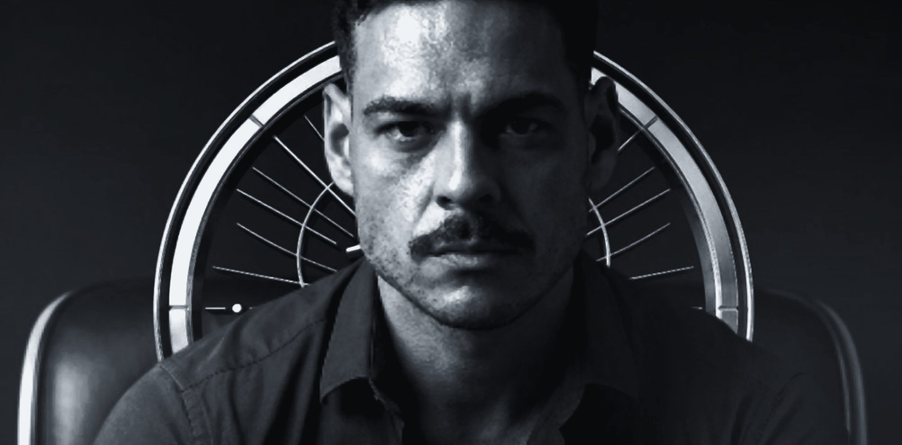
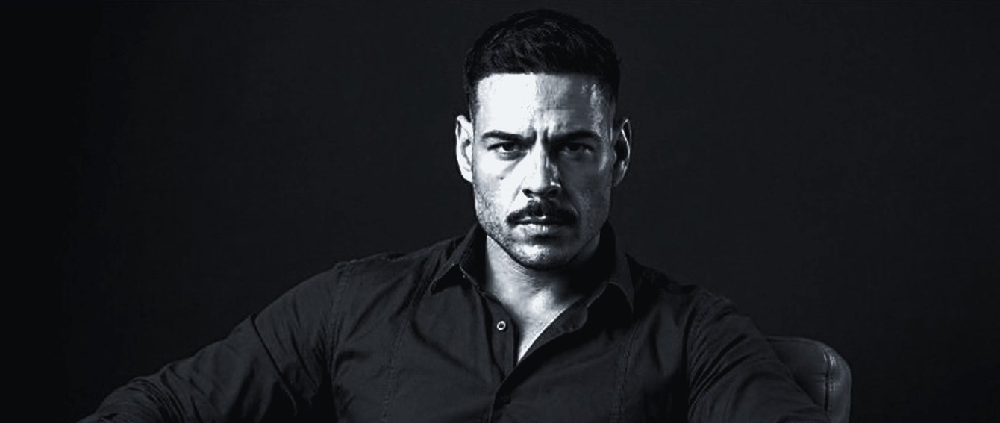
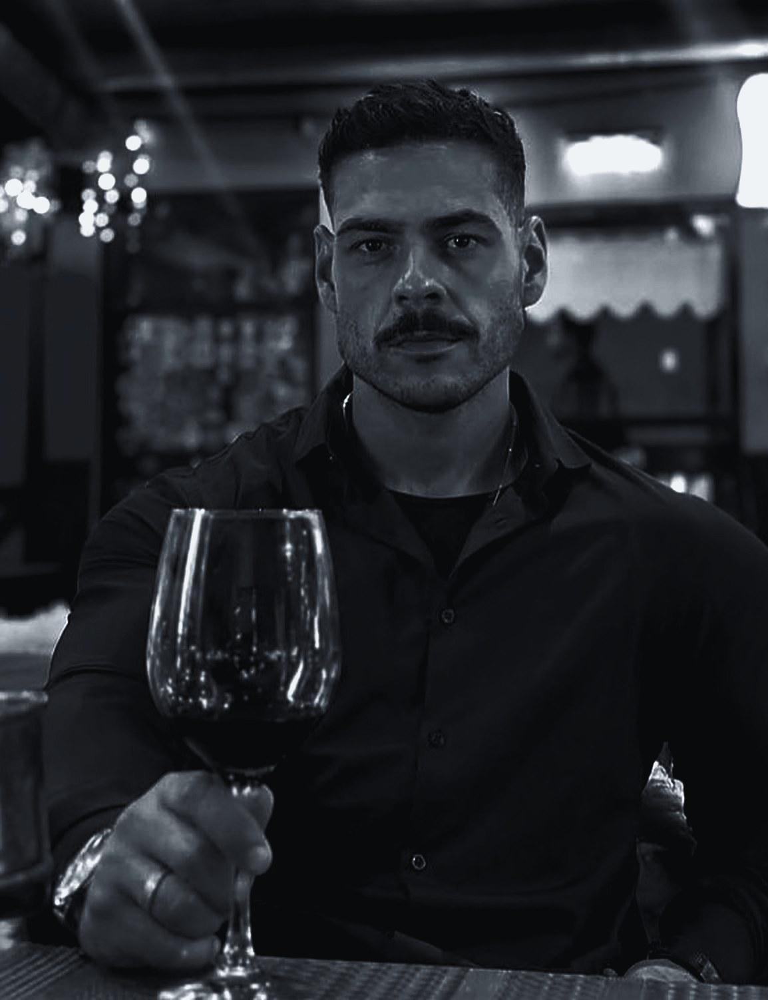

Fernando, este é o produto masculino que eu desenhei a partir do seu método. Do lado dela, você ensina a ler um homem. Do lado dele, quero que você ensine o homem a desenvolver presença, conversar de verdade, perceber reciprocidade e escolher com critério. Ele vende numa VSL própria a R$297 na Nasten, com dois order bumps e um acompanhamento em grupo como upsell.

Mais de 1.200 mulheres aprenderam com você a identificar o homem que não vale a pena. Isso dá a você uma posição que nenhum guru de sedução tem: você sabe exatamente o que faz uma mulher atenta desconfiar e o que faz ela continuar a conversa. Pensei o produto masculino em cima dessa vantagem.
Você ensina mulheres a ler comportamento masculino. Ninguém está em melhor posição para mostrar a um homem como ele está sendo lido.
Na segurança pública, observar comportamento é o seu trabalho. Essa autoridade vale nos dois produtos e não depende de pose.
Sem personagem, sem grito de "macho alfa" e sem desprezo por mulher. Você fala como um homem maduro que já viu muito de perto.
O mercado masculino está tomado por manipulação e frase pronta. Quase ninguém ocupa o lugar do desenvolvimento maduro, e é ali que eu coloco este produto.
Do lado dela você já tem o método, a prova e o público. Do lado dele, o seu método passa a trabalhar ao contrário: em vez de ensinar a detectar o homem errado, ensina a ser o homem certo.
Quando eu penso no homem que compra este produto, vejo um adulto que resolve a vida profissional, paga as contas e toma decisão no trabalho. Na vida amorosa, ele sente que fica sempre no meio do caminho: conversa sem avançar, investe sem receber de volta ou nem chega a ser notado pela mulher que admira. Ele chega até você em três momentos diferentes.
Saiu de um casamento ou de uma relação longa e descobriu que as regras mudaram. Os aplicativos parecem outro mundo, e a segurança que ele tinha aos 25 sumiu. Ele quer recomeçar sem parecer desesperado nem fingir ser outra pessoa.
É um bom sujeito, mas sente que é ignorado pelas mulheres que admira. Já ouviu muitas vezes que é "um amor de pessoa" e continua sozinho. Ele suspeita que está comunicando alguma coisa errada e não sabe o quê.
Ele até consegue se aproximar, mas é sempre ele quem chama, quem planeja e quem insiste. Investe mais do que recebe, idealiza cedo demais e só percebe a falta de reciprocidade quando já gastou meses.
Ele conhece alguém interessante e, em poucos dias, já imagina um futuro inteiro com ela.
Manda mensagem demais, se adapta a tudo e esconde o que pensa para não desagradar.
Ela responde cada vez menos. Ele aumenta o esforço justamente quando deveria ler o sinal.
Ele decide que o problema é a aparência, o dinheiro ou "as mulheres de hoje". Na próxima, a cena começa de novo, um pouco mais amarga.
Quero que a VSL mostre essa cena sem humilhar ninguém e diga a ele algo que nenhum guru diz: o problema não é falta de truque, é falta de presença, de leitura e de critério. E isso se aprende.
Ele já assistiu a vídeo de "macho alfa", decorou abertura de conversa, ouviu que precisava sumir para ela sentir falta e leu que toda mulher quer a mesma coisa. Uma parte desse conteúdo é inútil. Outra parte é desrespeitosa e afasta justamente a mulher madura que ele quer conhecer. Ele sai disso mais confuso, às vezes mais amargo, e continua procurando.
Esse contraste coloca o produto numa categoria em que quase ninguém está: desenvolvimento masculino aplicado à atração e às escolhas. Mais concreto que autoajuda e mais maduro que curso de cantada.
Escolhi um nome amplo, memorável e com cara de filme, que aguenta uma marca inteira. Mas sei que ele precisa ser explicado sempre do mesmo jeito, senão vira arrogância. O Último Homem não é o homem que sobrou nem alguém superior às mulheres. É o homem que sai do automático, ganha autocontrole, assume a responsabilidade pela própria vida e aprende a se relacionar sem implorar aprovação. É o último porque, depois dele, ela não precisa continuar procurando.
Num cenário em que tantos homens tentam chamar atenção, o que faz um homem se destacar? E como ele escolhe alguém que também o escolhe?
Existe uma diferença entre querer ser escolhido e construir uma vida da qual você se orgulha.
Entre correr atrás de atenção e aprender a criar conexão.
Entre idealizar uma mulher e descobrir se vocês realmente combinam.
O Último Homem é para quem decidiu parar de representar um papel, desenvolver a própria presença e escolher com consciência.
Não para ser desejado por todas. Para não precisar se abandonar para ser desejado por alguém.
Decidi construir a VSL inteira em cima desta virada: ele não precisa se transformar em outra pessoa. Precisa parar de fazer as coisas que o afastam das relações que ele quer, e desenvolver o que falta para se apresentar melhor, criar conexão e escolher com consciência.
É o espelho exato do lado dela. Ela aprende a escolher em vez de conquistar. Ele aprende que também escolhe, e que ser escolhido sem critério não é vitória nenhuma.

Organizei o método em quatro pilares, cada um respondendo a uma pergunta que esse homem se faz sem perceber. A ordem importa: não adianta aprender a conversar antes de saber como ele chega, nem aprender a ler sinais antes de saber o que ele mesmo quer.
Apresentação pessoal, estilo, postura, linguagem corporal, confiança e coerência entre o que ele mostra e o que ele vive.
Iniciativa respeitosa, conversa, escuta, humor, curiosidade, convite e condução de um encontro.
Observar sem tirar conclusão apressada, perceber interesse e reciprocidade, notar valores e compatibilidade.
Critérios, limites, ritmo, objetivos alinhados e a decisão de continuar ou seguir em frente.
Ele mapeia os padrões atuais, os pontos fortes e as situações que mais o deixam inseguro.
Pratica presença, conversa e iniciativa em situações reais, não só na teoria.
Aprende a separar o que aconteceu de verdade do que ele imaginou.
Define critérios, reconhece reciprocidade e decide sem se abandonar.
Revisa as experiências, aprende com os resultados e monta um plano para continuar.
É isso que separa o produto de um curso de cantadas: nada aqui depende de decorar frase ou fingir status. Para esse diferencial valer, cada pilar precisa sair com exercícios seus e exemplos que você viu acontecer.
A promessa que eu quero é sair de um homem que depende demais de validação, não sabe interpretar reciprocidade e investe sem critério, e chegar a um homem que se apresenta com confiança, cria conversas naturais, avalia compatibilidade e age de acordo com os próprios valores. Quero que a comunicação mostre essa virada em cenas concretas.
Direto, sem agressividade. Provocativo, mas inteligente: desafia o comportamento, nunca humilha a pessoa. Masculino e maduro, sem gíria de internet e sem tratar rejeição como catástrofe. E prático: toda ideia importante vira exemplo, exercício ou decisão.
Não quero um curso de vídeos motivacionais. Desenhei a grade para que cada módulo termine com um exercício que ele consegue aplicar na mesma semana. Essa grade é o meu ponto de partida. Ela fica pronta de verdade quando você colocar nela os casos que viu e as dúvidas que mais recebe.
Diagnóstico pessoal, objetivos realistas, os padrões que ele quer mudar, como usar o método e o respeito a limites e consentimento.
Estilo, postura, linguagem corporal e cuidado pessoal, com coerência entre imagem, rotina e identidade.
Medo de rejeição, parar de performar, construir vida própria e não medir o próprio valor pelo resultado de uma conversa.
Começar pelo contexto, fazer perguntas abertas, escutar, contar histórias e usar humor, sem entrevista, monólogo ou roteiro rígido.
Mostrar interesse com clareza, convidar sem pressão, planejar o encontro, estar presente nele e se comunicar depois.
Separar o que ele viu do que ele interpretou, avaliar consistência, reconhecer interesse e desinteresse e respeitar a resposta.
Valores, estilo de vida, expectativas e objetivos. A diferença entre atração e compatibilidade, e entre o essencial e a preferência.
Lidar com silêncio e rejeição, parar de insistir sozinho, segurar o impulso, comunicar limites e seguir em frente sem hostilidade.
Desafio prático de 21 dias, diário de experiências, revisão semanal e um plano para continuar depois do curso.
Homem desiste de curso quando não vê progresso. Por isso amarrei cada etapa a uma entrega concreta e a um sinal que ele consegue observar sozinho. Ele não precisa esperar um resultado com uma mulher para saber que avançou.
| Etapa | O que ele recebe | O sinal de que aplicou |
|---|---|---|
| Diagnóstico | Autoavaliação inicial | Identifica os dois ou três comportamentos que mais pesam |
| Presença | Checklist pessoal | Cria uma rotina simples de apresentação e postura |
| Comunicação | Exercícios de conversa | Pratica escuta, perguntas e convites claros |
| Leitura | Ficha de observação | Registra fatos sem confundir suposição com evidência |
| Seleção | Matriz de compatibilidade | Define critérios e enxerga alinhamentos e diferenças |
| Continuidade | Plano de 21 dias | Revê ações, aprendizados e próximos passos |
E deixei de fora, de propósito, qualquer promessa de número de mulheres, mensagens ou encontros. Isso depende de outra pessoa, e prometer o que depende do outro é exatamente o que essa marca recusa.
Coloquei o produto no mesmo preço do lado dela. R$297 é uma decisão que ele toma sozinho, logo depois de se reconhecer na VSL, e mantém os dois produtos do protocolo no mesmo patamar. A VSL vende todos os dias, com você gravando uma vez, e cada ajuste aparece no número da semana seguinte.
Garantia de 7 dias e acesso imediato a tudo. Na página digo com clareza quanto tempo ele precisa dedicar por semana, porque homem que sabe o esforço que vai fazer termina o curso.
A minha regra para essa VSL: abrir com uma cena que ele viveu, nomear o problema sem ridicularizar ninguém e ensinar uma ferramenta de verdade antes do preço. Ele precisa sair do vídeo com a sensação de que já aprendeu alguma coisa.
A conversa que morreu sem explicação, contada do jeito que ele viveu
Tentar ser aprovado sem desenvolver presença nem critério
Você conta que ensinou 1.200 mulheres a filtrar homens e o que viu nesse processo
Atração, compatibilidade e escolha são três coisas diferentes
Os quatro pilares com exemplos e um exercício inteiro: fato ou suposição
Módulos, materiais, tempo de dedicação, para quem é e para quem não é
Você apresenta a oferta e o botão aparece na tela
"Já tentei de tudo", "não tenho aparência", "isso é coisa de coach"
Os 7 dias, o convite para entrar e o fechamento com "Que os bons se encontrem"
Nas objeções, a resposta nunca pode ser "com o método ela vai querer você". A resposta é o que ele passa a fazer melhor. Prometer controle sobre a vontade de outra pessoa derruba a marca inteira.
Escolhi dois complementos que ele usa logo de cara, sem terminar o curso e sem repetir o conteúdo principal. Os dois aparecem na tela do checkout e entram com um clique.
Checklist de preparação e condução: como convidar sem pressão, como escolher o lugar, como manter a conversa viva e o que fazer depois que o encontro acaba.
Exercícios para começar e aprofundar uma conversa com naturalidade, seja no aplicativo, seja pessoalmente. É um roteiro flexível, sem frase decorada.

Uma parte dos compradores vai querer mais que o curso gravado. Ele quer contar a situação dele e ouvir a sua leitura: aquela conversa, aquele encontro, aquela dúvida sobre continuar ou não. O Círculo O Último Homem é um acompanhamento em grupo com você, oferecido logo depois da compra, quando a confiança dele está mais alta.
O anúncio leva para a VSL e a VSL leva para o checkout. É a mesma estrutura do Método Mulher Magnética, mas com página, checkout, área de membros e grupo próprios. Um homem nunca cai no funil dela, e uma mulher nunca cai no dele.
Escolhi uma headline principal que junta as duas metades do produto: o homem que se desenvolve e o homem que escolhe. Ela vai na página, na abertura dos anúncios e no primeiro minuto da VSL.
Pare de tentar ser o homem que todas querem. Torne-se o homem que sabe qual mulher quer ao seu lado.
Ele sente que não chama a atenção das mulheres que admira.
"Você pode estar tentando chamar atenção sem entender o que está comunicando."
Ele investe tempo e energia sem receber reciprocidade.
"Interesse não deveria exigir que você carregasse uma relação sozinho."
Ele se preocupa tanto em ser escolhido que esquece de avaliar se combina.
"Além de perguntar se ela gosta de você, você sabe se vocês combinam?"
Visualmente, a marca vive de preto profundo, grafite, prata e branco frio, retrato editorial e muito espaço vazio. Nada de lobo, leão, coroa, carro de luxo ou mulher como troféu.
É a mesma lógica do lado dela, numa conta de anúncios que não se mistura. Primeiro garanto que cada venda é medida, depois testo os três ângulos e só então escalo o que provou que vende.
Pixel e API de Conversões na página e no checkout, com evento de compra separado do produto feminino. Não coloco verba antes disso.
Uma campanha CBO para homens de 25 a 45 anos, com um criativo por ângulo e mais dois de autoridade, de R$150 a R$300 por dia.
O ângulo que vencer vai para Advantage+, e eu continuo subindo de 3 a 5 criativos novos por semana dentro dele.
| Métrica | O que eu cobro |
|---|---|
| Hook rate (3s) | ≥ 25% |
| CTR no link | ≥ 1,2% |
| Retenção até o pitch | ≥ 15% |
| Conversão da página | 1,5% a 3% |
| CPA alvo | ≤ R$180 |
São as mesmas metas do lado dela, para os dois produtos serem comparáveis. Na copy eu não falo do estado civil de quem assiste nem uso mulher como isca. Isso protege a conta e a marca.
Fernando, este produto não nasce sozinho. Ele é a outra metade do seu Método Mulher Magnética. Do lado dela, você ensina a reconhecer quem não vale a pena. Do lado dele, ensina a ser um homem que vale. Por isso eu chamo o conjunto de Protocolo Os Bons Se Encontram. A tese é uma: relação boa começa quando as duas pessoas param de representar e passam a escolher com critério. Mas cada lado compra o seu produto, na sua VSL e no seu checkout.
Os 13 códigos para identificar intenção, padrão e risco antes de se envolver. Ela para de tentar ser escolhida e passa a escolher quem fica.
Presença, conversa, leitura de reciprocidade e critério para escolher. Ele para de implorar aprovação e passa a se apresentar como o homem que quer ser.
Ela chega com medo de errar de novo. Ele chega se sentindo invisível ou cansado de carregar a relação sozinho. Um vídeo que tentasse falar com os dois ao mesmo tempo não falaria direito com nenhum.
A mulher que compra para se proteger não pode sentir que está no mesmo carrinho de um curso masculino de atração, e o homem não quer comprar numa página feita para mulheres. Cada produto tem a sua página, a sua área de membros e o seu grupo. Nenhum checkout oferece o produto do outro lado.
Rodo uma campanha para cada público no Meta, cada uma com o seu evento de compra. Assim eu sei quanto custa cada venda de cada lado, e o resultado de um produto nunca esconde o problema do outro.
Do lado dela, você ensina a reconhecer o homem que não vale a pena. Do lado dele, ensina a ser o homem que passa nesse teste. É assim que os bons se encontram.
Esse é o produto que eu enxergo do lado dele: um homem que desenvolve presença sem criar personagem, mostra interesse sem pressionar, reconhece reciprocidade sem fantasiar e escolhe sem se abandonar. Do outro lado, uma mulher que aprendeu a enxergar. O protocolo existe para esses dois se encontrarem.